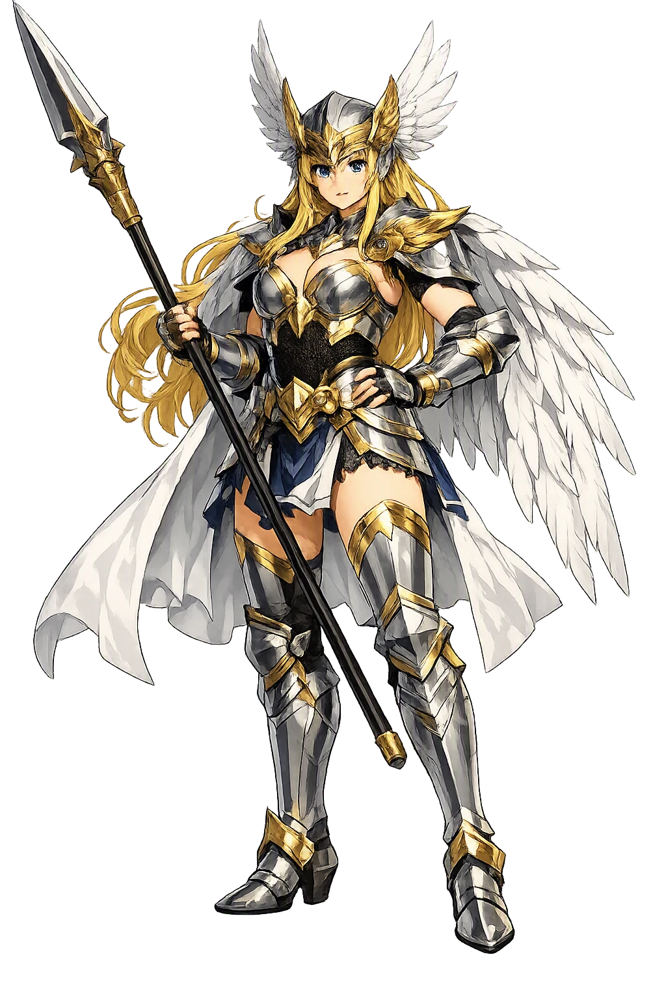
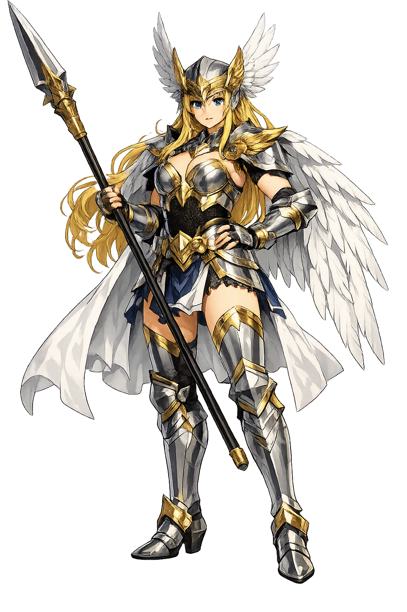

Unicode restoration and ASCII comparison
ᚦᚱᚢᚦᚱ
The name in its original Norse form. Þrúðr (ᚦᚱᚢᚦᚱ) is attested in the source tradition — “Strength, power”. Its acute stress marks carry the full phonetic and orthographic weight of the source tradition.
thrudr
Reduced to plain thrudr, the name loses everything that made it specific: acute stress marks. What remains is an ASCII string that machines can parse but that no longer speaks with its original voice.
Þrúðr
The Unicode restoration recovers what ASCII flattened. Þrúðr restores acute stress marks, returning the name to its original written dignity. The domain encodes to Punycode, but the browser displays the truth.
Þrúðr.com → xn--rr-wja3bs.com
The non-ASCII characters in Þrúðr are encoded while the ASCII remains visible. To the DNS, it is Punycode. To humanity, it is Þrúðr.
How Þrúðr travels from ancient script to the modern URL
Owned, ideal, and ASCII forms of Þrúðr
Þrúðr
Restores ᚦᚱᚢᚦᚱ. The live temple domain — þrúðr.com.
thrudr
Flattens ᚦᚱᚢᚦᚱ. The plain ASCII fallback — what DNS and legacy systems see.
How Þrúðr was spoken
Valkyrie and Daughter of Thor
Þrúðr is the very idea of strength made into a goddess. Her name means "power" or "force," and in the Norse sources she is both the daughter of Þórr and Sif and one of the Valkyries who serve in Valhǫll. She embodies the inheritance of the thunder-god — not merely muscle, but the indomitable will that does not break.
Grímnismál names Þrúðr among the daughters of Þórr and Sif, the inheritors of storm and strength.
She is counted among the Valkyries in the Eddic lists, one of the choosers of the slain who serve in Óðinn's hall.
Her name is a common noun for might; she is the abstraction of force raised to divine personhood.
A runestone on Öland names a "Þrúðr's son" or praises a warrior with her strength, showing her name reached the Viking-Age grave.
Stories of Þrúðr
Þrúðr's mythology is sparse but charged: every mention of her name is a mention of power.
In the list of Óðinn's hidden names and the families of the gods, Grímnismál names Þrúðr as a daughter of Þórr. With her mother Sif — whose golden hair was famously shorn and replaced by dwarven gold — Þrúðr inherits both beauty and force. She is the only one of Þórr's children whose name is itself an abstraction of his domain.
Several Eddic and skaldic sources include Þrúðr in lists of Valkyries. Like her half-brother Magni, who inherits strength from Þórr directly, Þrúðr seems to carry her father's might into Óðinn's service, selecting the warriors who will fight at Ragnarǫk.
The Karlevi runestone (Öl 1), raised on Öland around 1000 CE, contains a skaldic stanza praising a dead chieftain. The poet calls him a "thegn of Þrúðr" — that is, a warrior in the service of the goddess of strength. The inscription shows that Þrúðr was not only a mythological figure but a name invoked in the poetry of Viking-Age elite death.
Þrúðr is strength with a face. In a culture that valued physical courage above almost every other virtue, her name was a compliment and a boast: to be Þrúðr's servant was to be unbreakable. She asks us to consider what strength is for — whether it serves the storm, the battle, or the long endurance that outlasts both.
Enter Extended Lore